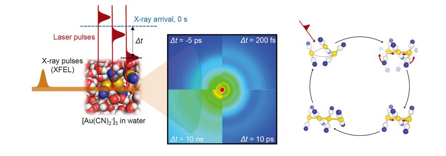

KAIST RESEARCH ACHIEVEMENTS
Direct observation of bond formation in solution with femtosecond X-ray scattering
Department of Chemistry Hyotcherl Ihee
Summary
In 2030, Mr. Kim enters his living room and sees that his son is watching the Discovery Channel, which is showing a highly detailed video on how DNA and protein interact with each other. He thinks that the movie must be a fictional representation, saying "The human imagination really is unlimited!" To this, his son replied, "Daddy, this video is what scientists have actually observed in real time. They can now see how atoms actually move, just as we film the events in our lives using our smartphones."
R&D Report
A research group led by Prof. Hyotcherl Ihee has overcome challenges previously thought insurmountable to achieve, the world's first real-time observation of the moment in which chemical bonding takes place-where atoms combine to form a molecule. The group's research results were published in Nature on February 18, 2015. The making and breaking of atomic bonds in molecules are essential processes in chemical reactions, and the dynamics of bond breaking have been studied intensively using time-resolved techniques. While bond breaking is associated with one molecule, bond formation, in most cases, requires that two molecules meet each other. Therefore, it has been generally acknowledged that the moment of bond formation is more difficult to observe.
Especially, it is more difficult to observe bond formation than bond breaking in high time resolution. Consider the case in which one observes hundreds of millions of molecules of a material contained within a flask. Because those hundreds of millions of molecules are mixed up, achieving simultaneous bond breaking of individual molecules by a laser flash is easy, but achieving simultaneous bond formation involving two individual molecules is difficult. This can be compared to a situation in which numerous married couples are gathered in a plaza. It would be easy for the couples holding each other's hands to release their hold at the moment you fire a pistol into the air. However, if a mixed up group of couples had to find their spouses and take their hands upon the firing of a pistol, they would run about in confusion. Thus, Ihee's group utilized a special situation to observe bond formation processes. Dissolving gold (Au) in water results in many close groupings of several gold atoms, among which the research group focused on clusters of three gold atoms. The three neighboring gold atoms, when hit by a laser beam, are excited and begin forming chemical bonds, leading to the formation of a gold trimer complex. As a result, the team was able to determine whether the complex has a bent or linear structure, and how inter-atomic distances and angles change over a certain time period. They discovered the following specific processes of the formation and change of a gold trimer structure by photo-induced reactions. Regarding the three gold atoms before the reaction, the distances between the first and second atoms and between the second and third atoms are about 3.3 (Angstrom (Å), 1 ? = 10-10 meters) and 3.9 ?, respectively. When hit by the laser beam, the three atoms are bound together to form a linear structure within the span of hundreds of femtoseconds. Now, the distances of the two Au-Au pairs are shortened to equal distances of about 2.8 ?. With the linear structure maintained, the shortening continues until another Au monomer joins the structure to form a tetramer complex. After that, the excited atoms return to their original ground state.

Fig 1. Femtosecond X-ray liquidography: Time-resolved
X-ray diffraction data are collected as a function of time delay
between the laser pulse and X-ray pulse. Structural and kinetic
analysis of the data reveals the structural dynamics.
Of great importance in this work is the suggestion that a quadratic polarization response with respect to strain gradients can overwhelm the linear response in a large-strain-gradient regime when the system doesn't have inversion symmetry. This quadratic effect is considered to be a new, fourth, symmetry element that was missing in electromechanical phenomena, following piezoelectricity, electrostriction, and the linear flexoelectric effect.
This research will enable researchers to observe not only molecular vibrations and rotations, but also the moment of protein formation and the step-by-step changes in protein structures. This will help researchers obtain basic information for the development of treatments for diseases and new drugs, as well as for controlling the reactions involved.
Research Funding
ㆍThis research was supported by IBS-R004-G2.
Research Outcomes
ㆍDirect observation of bond formation in sh femtosecond X-ray scattering, Nature, 518, 385-389 (2015).